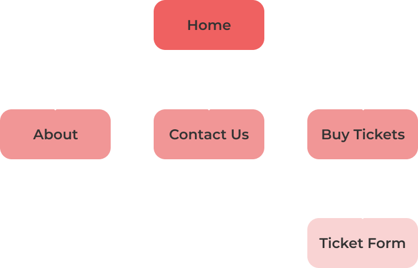
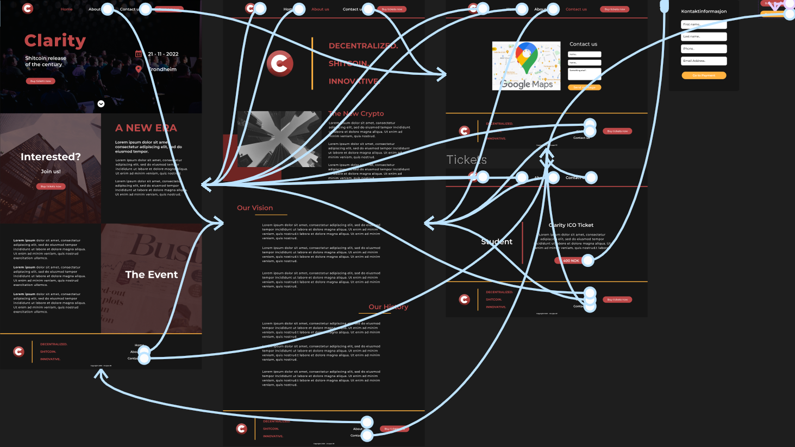
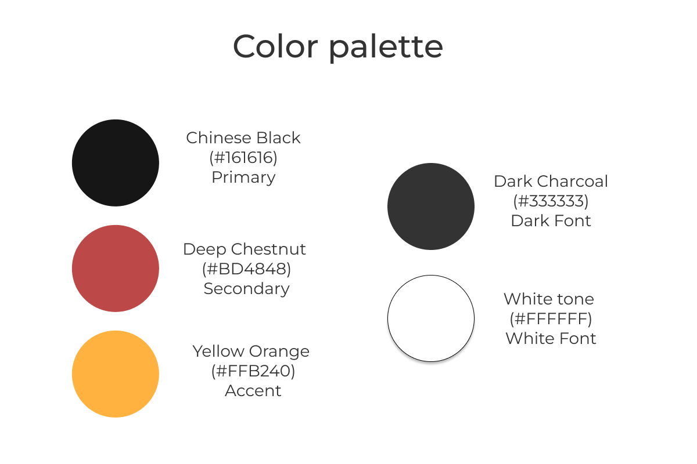
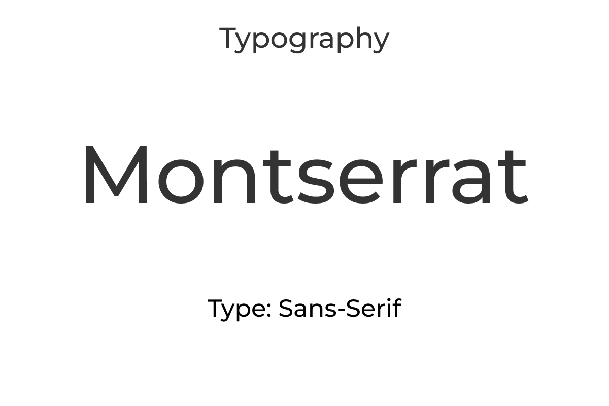
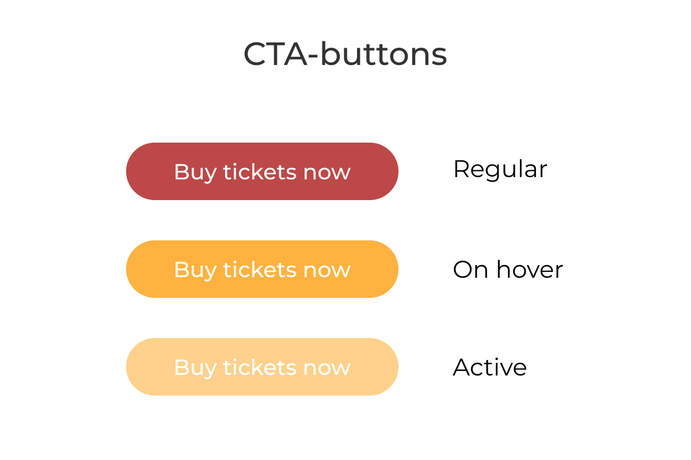
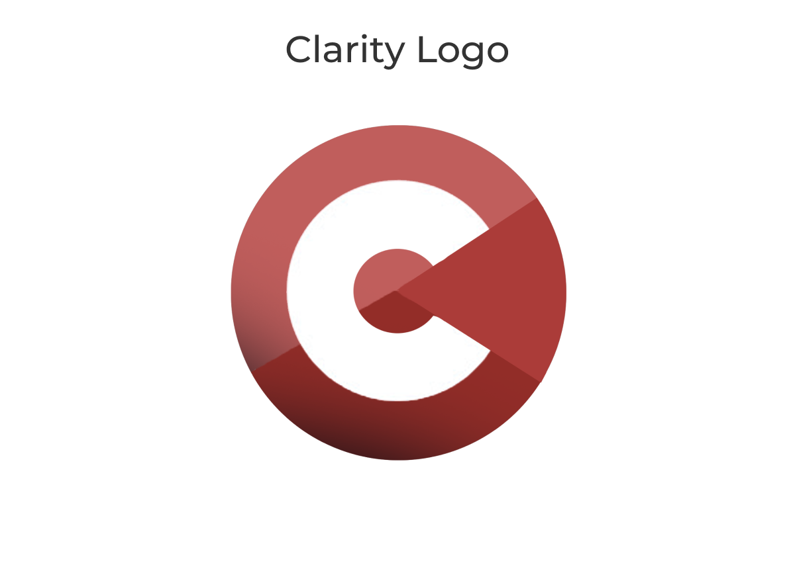

Customer details
Customer:
Clarity AS
The purpose of this website is to promote the Inital Coin Offering / Release of Clarity's new crypto valuta. It is a way for interested people to read about Clarity and the event itself, buy tickets for the event, and to contact the organizers.
The goal for the website is to inform potential investors about the new release, enable ticket purchasing and for people to be able to contact Clarity via a contact form
The audience is crypto bros, potential investors and in general people who are interested in crypto and finance.
Navigation Structure
The navigational aspect for the website is based on a Homepage with access to all the subpages using a navigation bar at top and a menu in the websites footer. The navigation bar will be sticky when scrolling down the page, and will therefore be available for the user at any given point of the vertical scroll-position of the website.
The menu will refer the users to the respective subpage with the href-attribute. This will open the subpage in the same window. External link or URLs will take the user to a new window for user-experience motivations. This will allow the user to visit external websites without having to navigate to the same page in out website when done reading at the external website.
We believe this is the best way to structure our navigation because of the amount of subpages. Having the navigation at the top of the screen and in the footer prevents the navbar in distracting the user from the content of the page, while being available at any given time.
This is the sitemap for our site:
This is the relation between the menu elements and the pages:
The Design Manual
Our color palette is based on the color of the logo, and uses a Chestnut Red as a secondary color, while the primary color is Chinese Black. We use a Yellow Orange color as an accent to give some variation in the color tones shown in the website. This makes a common color-combination of black, yellow and red, which is recogniseable from for instance the German flag. The reasoning behind the color palette is to give a modern look, with great contrast in regards to universal design. It also provides room for sudden accents that will give a neutral, but pleasing color-scheme to the website.
This is the Color Palette of the website:
We are planning on using the Montserrat font for the website, as it is a modern sans-serif-font that is often used by new websites. It is minimalistic, and has a good readability while also being good-looking and easy for the eye.
This is the Typography of the website:
As fot the Logo and the elements they are primary red, an the CTA-design has a yellow onhover-effect that will give a clear and nice contrast and feedback for the user. By having the CTA-buttons with border-radius, we believe that it will make it clear that it is indeed a CTA, and that will be useful in regards to usability and visibility aspects of the website.
This is the Logo and the CTA-design:
 The Wireframes
The wireframe was designed to give a general outlay of the website in form of a sketch with no specific content, but modular blocks that represent elements in the website. It is meant to be a visual guide for the website and to manage space when implementing the content.
The Website Outlay
As mention earlier, the site consists of 4 pages in total, including a Homepage, About us, Contact and Ticket Shop with a ticket form. Below is a few screenshots of the design itself, following the design manual mentioden in the last chapter.
The design was made in Figma, where we have also made a functional prototype. By pressing the button below the image gallery, you will be sent to the Figma-site, where you can run a close-to full-scale prototype of the website.

The Content
Home
The purpose of this website is to promote the Inital Coin Offering / Release of Clarity's new crypto valuta. It is a way for interested people to read about Clarity and the event itself, buy tickets for the event, and to contact the organizers.
About us
The purpose of this website is to promote the Inital Coin Offering / Release of Clarity's new crypto valuta. It is a way for interested people to read about Clarity and the event itself, buy tickets for the event, and to contact the organizers.
Ticket Shop
The purpose of this website is to promote the Inital Coin Offering / Release of Clarity's new crypto valuta. It is a way for interested people to read about Clarity and the event itself, buy tickets for the event, and to contact the organizers.
Contact Page
The purpose of this website is to promote the Inital Coin Offering / Release of Clarity's new crypto valuta. It is a way for interested people to read about Clarity and the event itself, buy tickets for the event, and to contact the organizers.
Minimum Requirements
On-scroll Animations
The on-scroll animation will gradually show the content to the users when they scroll through the website. This will be done using JavaScript, by adding an eventlistner and change CSS-classes to determine the styling of the element using JS.
Form-validation and submission
The form-validation and submission functions will enable validation of the input data from the user. This will enable us to secure that the data is in the right format when sending it to the backend-server. The submission-function will be coded, but not implemented, as the project is frontend only, and there wont be a backend server implemented.
Countdown-timer and ticket-counter
The countdown timer will show the remaining time before the event starts, and we will set the
counter to count towards the project deadline. This will be done by using dynamic data fields that
are sent by JavaScript functions by getting the current time and displaying that on the website.
The ticket-counter will count the remaining tickets for each category. This will be reset each time
the user enters the page, as there are no safe way to store the data over time. This will be done by
using JavaScript-functions that will track the amount of times "Buy tickets" are clicked for each
category, and then update the variable.
Dynamic content / Ticket-carousel
The tickets will be shown for a given time period before changing to the next type. This will be triggered on load, and if someone press one of the ticket-types in the "ticket menu" then it will be turned off. This is due to usability, as you dont want it to change if for instance youre reading the ticket-information. This will be done using Javascript by combining a timer-function with change of the display attribute of each ticket type. More advanced animations may be implemented if we have time.
Extra: Google Maps API
Will show the user the location of the company, it this case this will be Gløshaugen. This will be done using javascript and the Google Maps API, that will be implemented in the contact page with a HTML-snippet provided by Google, and by mark the map using Javascript-functions.
The Game Plan
The code will be handled with GitHub, that provides easier communication and version controlling. For the website, we will start by making the Header and the Footer as theyre used in every page, then we will make the skeleton code for the website, by splitting them into rows and columns according to the design mentioned earlier. Then we will implement the design in code.
We have decided to split the workload into 2 pages each, as it is 4 pages in total. We will try to mak the common elements first, and then use seperate css-sheets for each for the pages, and then combining them. This requires good communication, but we are striving to work in-person together, as this is the best way.
The paragraphs below shows the sdeadlines and important milestones in the project.
Anders
Thomas
File Structure
- index.html (Homepage)
- about.html
- tickets.html
- contact.html
- css/
- style.css
- img/
- logo.png
- logo_aboutus.png
- header.png
- home_subsec1.png
- home_subsec2.png
- about_us_section.png
- js/
- script.js
- ticket_carousel.js
- maps.js